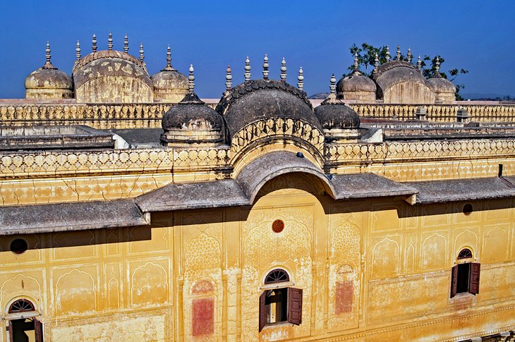
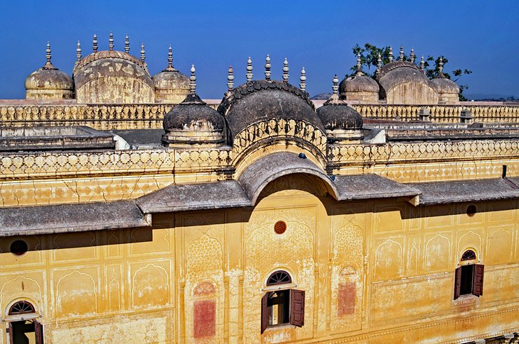

From royal palaces to peppy pubs and from regal forts to plush restaurants, the city offers a fascinating mix of attractions for an avid traveler. And the welcoming vibe of the city, a quality that’s inherent to Rajasthan’s imperial culture and heritage. Even the hotels in Jaipur extend warm hospitality to their guests. When you are in such a warm and vibrant setting, there’s just one thing you should do – soak in the splendor of the city to the hilt.
| Hawa Mahal |
City Palace |
Jal Mahal |
Nahargarh Fort  |
| Weather | Next |